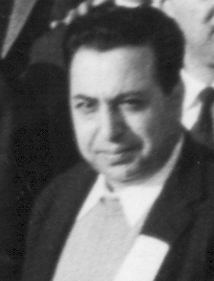

The Second National Front
|
In 1960 with the political and economic situation in Iran in crisis, the shah had to allow moe political freedoms in Iran. Supporters of Dr. Mossadeq started their activities in the form of an organization known as 'The Second National front'. Asghar Parsa was an active member of this organization. These are pictures from his years The Second National Front. |
 |